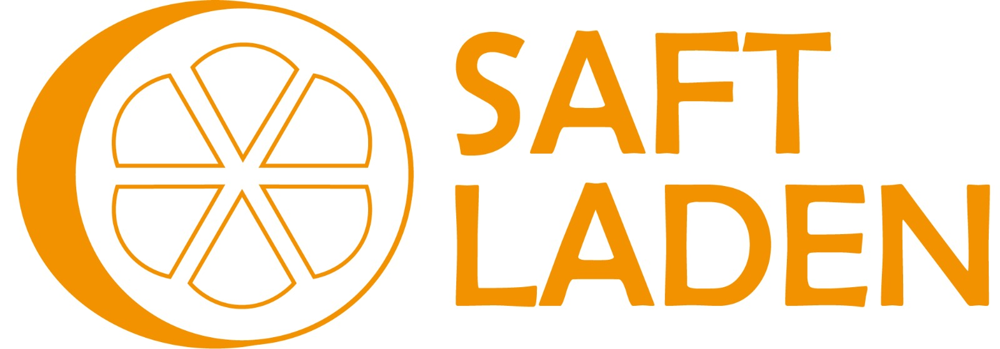

Photography

Musik
Videos
Mein kleiner Donut
Logos
Ein Logo für ein Schulprojekt.

Ein Logo für BWL letztes Semester.
Arts and Crafts
was ich heute gelernt habe? Hebe Projekte auf sonst wird dein Zukunfts-Ich nichts für Portfolios übrig haben.